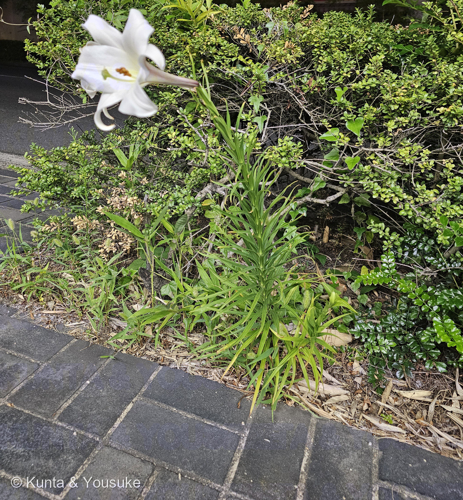
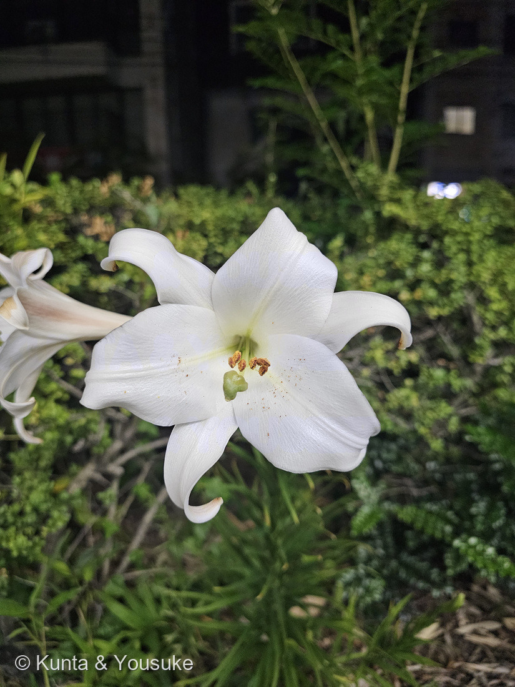
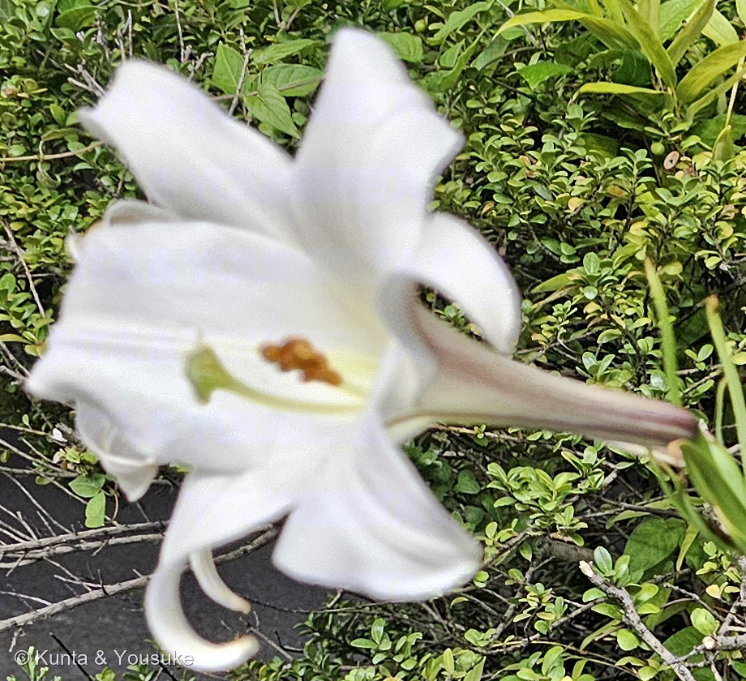
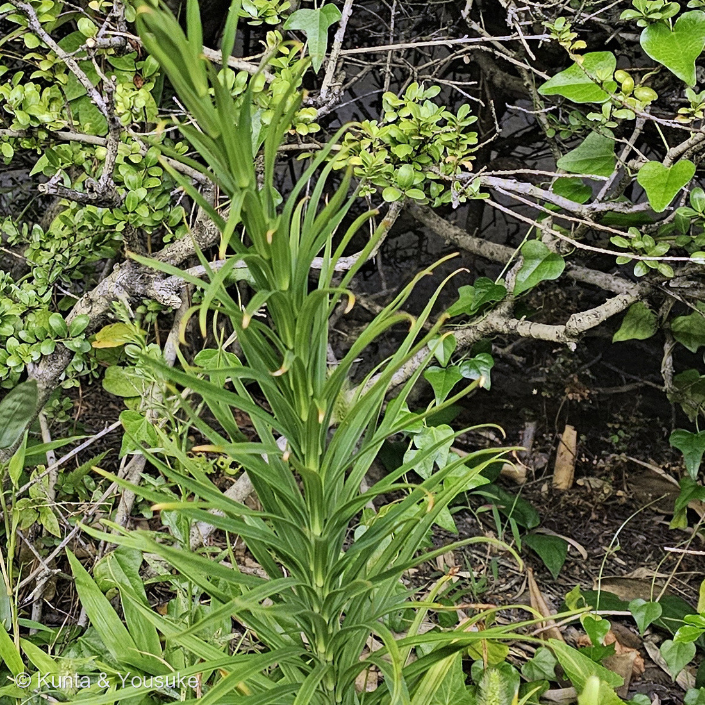

地図を読み込んでいるよ…
🔍 写真も地図も、押しているあいだ拡大して見られるよ（スマホは指を置いてすこし待ってね）。
🌍 の地図＝この子がもともと自生している場所を緑に。台湾（固有種）。日本にいるものは、ぜんぶ人が持ちこんだもののすえだよ。くわしくは下の地図の説明を見てね。
⭐台湾だけの花だよ。日本語版Wikipediaは台湾原産の「固有種」とし、三河の植物観察も「台湾原産」とする。⭐⭐⭐この地図でいちばん大事なのは「日本が緑じゃないこと」＝日本にいるタカサゴユリは、ぜんぶ人が持ちこんだもののすえなんだ――「19世紀にイギリスに導入され」「日本では1924年に園芸用に移入された帰化植物として全国に分布」（日本語版Wikipedia）＝⭐大正13年だね。⭐⭐そして、ひろがりかたが速い＝「種子を多くつけ、風で運ばれて分布を拡げる」（同）／「種子繁殖力が強く、播種後8〜10ヶ月で開花し、増殖する」（三河）＝⭐種が落ちて1年たたずに咲くから、空き地でも道ばたでも増えられる。⚠⚠でも、消えるのも速い＝「連作障害が出やすいと言われ、一時的に根付き拡がっても数年経つと姿を消す場合が多い」（同）＝⭐だからこの緑の外にいる株は、いつもその場所にいるとはかぎらないよ。⭐⭐おまけのテッポウユリの地図は、ちょうど裏返しになる＝「日本の南西諸島および九州南部が原産」（日本語版Wikipedia）＝⭐⭐あちらは日本から世界へ出ていった子で、1941年まで毎年3,000万球がアメリカへ運ばれていた。⭐ふたりの子どもが、日本で1951年に作られたシンテッポウユリ＝⚠いま道ばたに咲く白いユリの多くは、そちらだとも言われている。⭐台湾の子は、図鑑では257 シマサルスベリや253 ビロウともつながるよ。
⚠ 地図は国（日本と中国だけ県・省）までしか塗れないから、ほんとうの分布より広く見えていることがあるよ。地図はだいたいの場所。正確なところは、上の文を見てね。
タカサゴユリ（高砂百合）
Lilium formosanum A. Wallace
別名 ホソバテッポウユリ（細葉鉄砲百合） ── ⭐「葉の細いテッポウユリ」＝燻太さんの見立てと同じところを見た名前 原産 台湾（固有種）
ユリ科 · Liliaceae（ユリ属 Lilium・ユリ目 Liliales）── ⭐4人目のユリ科（054 カノコユリ・065 オニユリ・197 カタクリ）／⭐⭐ユリ属は3人目＝ユリシリーズ第3弾／⚠科は増えないので102科のまま
燻太さんの見立て「通勤路で咲いていた白いユリだよ。テッポウユリとかなのかな？」── ⭐⭐⭐テッポウユリ本人は花期（4〜6月）で落ちた。でも「テッポウユリ」という名前は、この子の物語のまんなかにいるんだ
⭐⭐⭐ 名前と学名の由来 ── 和名も学名も、同じ島を指している
⭐⭐⭐⭐ この子の名前は、日本語もラテン語も、どちらも台湾と言っているんだ。
- ⭐⭐和名の「タカサゴ」＝高砂国＝日本語版Wikipediaは「台湾を意味する古称」と書く。⭐つまり「高砂百合」は、そのまま「台湾のユリ」。
- ⭐⭐⭐種小名の formosanum も「台湾の」＝ポルトガル語の Formosa（美しい島）から来た、台湾の古い呼び名だよ。
- ⭐⭐だから、和名と学名がまったく同じことを言っている。――⭐258 ナギで「属名も種小名も日本語のナギだった」と書いたけれど、あれと同じ形だね。⚠あちらは名前が二度、こちらは場所が二度。
- ⭐属名 Lilium は、054 カノコユリに書いたとおり「ラテン語でユリ」。⭐これでユリ属は3人目だよ（065 オニユリ）。
- ⭐⭐別名のホソバテッポウユリ（細葉鉄砲百合）＝「葉の細いテッポウユリ」。⭐⭐燻太さんが「テッポウユリとかなのかな？」と言ったのと、まったく同じところを見た名前なんだ。
⭐⭐ この植物のこと ── 1年で咲いて、数年で消える
- ⭐台湾の固有種（日本語版Wikipedia）＝台湾にしかいなかった花。⭐「19世紀にイギリスに導入され」、⭐⭐日本へは「1924年に園芸用に移入された」（同）＝大正13年。⭐三河の植物観察も「観賞用として大正時代に導入された」とする。
- ⭐⭐⭐そして、この子はとても速い＝三河は「種子繁殖力が強く、播種後8〜10ヶ月で開花し、増殖する」と書く。――⭐種が落ちて、1年たたずに花が咲く。⭐ふつうのユリは、球根が育つまで何年もかかるのに。
- ⭐だから切り花として重宝された＝みるしるは、導入の理由を「種を播いてから一年足らずで開花するため切花用として生産性が高いこと」「真夏に開花するため、8月のお盆用切花として高い需要が見込めること」と説明する。
- ⭐⭐ひろがりかたも速い＝「種子を多くつけ、風で運ばれて分布を拡げる」（日本語版Wikipedia）。⭐空き地でも、道ばたでも咲く。
- ⭐⭐⭐⭐でも、この子にはふしぎな終わりかたがある。――「連作障害が出やすいと言われ、一時的に根付き拡がっても数年経つと姿を消す場合が多い」（同）。
- ⭐⭐つまり、あらわれるのも速いけれど、消えるのも速い。――⭐「去年はいっぱい咲いていたのに、今年はいない」ということが起きるんだ。⏳燻太さんの通勤路のこの子も、来年いるかどうか分からない。⭐⭐だから「2026年8月19日、ここに1本立っていた」という記録が、そのまま値打ちになると思う。
- 大きさ＝⚠出典が割れている＝三河は「自生種は高さ20〜55㎝」だが「栽培種は200㎝近くになるともいわれる」とし、日本語版Wikipediaは「茎が比較的太く丈夫で、丈が1.5m ほどに生長するものもある」と書く。⭐写真①の株は、歩道のブロックとくらべると、そこまで大きくはなさそうだよ。
- 花＝「花は1〜数個、散房状につき、芳香があり、細い筒部があり、先が広がる漏斗形」（三河）／「花長は15-20cm、直径は5cm より大きめ」（日本語版Wikipedia）。
⭐ 同定について ── テッポウユリは花期で落ちる。でも、もうひとり残る
⚠ この子には名札が無い。⭐だから229 ダンチクや260 シュロガヤツリと同じで、写真から言えることを、証拠の強い順にならべるね。
- ⭐⭐⭐⭐いちばん強い＝花被の外面に紫赤色のすじ（写真③）＝三河「花被片は6個、白色、外面が紫赤色を帯びる」／日本語版Wikipedia「花は白を基調とするものの薄い紫色の筋が入り」。⭐写真③の、右へのびる筒の外側を見てほしいな。
- ⭐⭐⭐次に強い＝花期＝8月19日。三河はタカサゴユリを「7〜9月」、テッポウユリを「4〜6月」とする＝⭐⭐ここでテッポウユリ本人が落ちる。
- ⭐⭐その次＝葉が細い（写真④）＝三河「線形〜狭披針形、長さ2.5〜15㎝、幅4〜13㎜」――⚠テッポウユリは「葉幅が6.6〜18.3(30)㎜と広い」（同）。
- ⭐そして＝花粉が赤みを帯びる（写真②）＝みるしるは「花粉は赤みを帯びる」をタカサゴユリの特徴として挙げる。⭐写真②では、葯に赤褐色の斑が見え、花びらに散った花粉も赤茶色だった。
- ⭐いちばん弱い＝道ばたの植え込みに、勝手に1本だけ立っている＝帰化した子のふるまい。
⚠⚠⚠ そして、落としきれなかった相手 ── シンテッポウユリ。
- ⚠シンテッポウユリ（Lilium × formolongi）＝三河は「タカサゴユリとテッポウユリの交配により日本で1951年に作られた園芸種」とする。
- ⭐落とせない理由①＝交雑種なので変異がある＝三河は「花被片は外面が紫赤色を帯びない純白色のものが多い」と書く＝⚠「多い」であって「必ず」ではない。
- ⭐理由②＝葉の幅が重なる＝シンテッポウユリ「幅2〜7㎜」／タカサゴユリ「幅4〜13㎜」＝⚠4〜7mmのところで、どちらもありうる。
- ⭐⭐理由③＝「道路脇の緑地、河川敷、空き地など…勝手に生えてきたその多くはシンテッポウユリ」という指摘がある＝⚠まさに今回の状況だよ。
- ⭐⭐⭐だから、正直に書いておくね。――タカサゴユリと判断した。でも、シンテッポウユリは落としきれていない。
- ⏳⭐⭐決着のしかたは、たぶんにおい＝三河は、シンテッポウユリがタカサゴユリと「香りが弱い」点で区別されると書く。⭐そして燻太さんは、明日もあの道を通る。
⭐⭐⭐⭐ 白いユリの三つ巴 ── 日本のユリが、世界へ出ていった話
⭐⭐⭐ この子を調べていて、いちばんおどろいたのはここだった。
- ⭐⭐燻太さんが名前を挙げたテッポウユリは、日本原産なんだ＝日本語版Wikipediaは「日本の南西諸島および九州南部が原産」とする。⭐筒のような花の形を、鉄砲に見立てた名前だよ。
- ⭐⭐⭐そのテッポウユリが、世界へ出ていった＝「1819年にイギリスへ持ち込まれ」「1880年代にアメリカで人気化し」――⭐⭐そして「1941年に日本の真珠湾攻撃で中断されるまで、毎年3,000万球を米国に輸出」していた（同）。⭐復活祭に飾る「イースターリリー」が、この子だよ。
- ⭐⭐⭐⭐そして、その10年後――1951年、日本でテッポウユリ×タカサゴユリがかけ合わされて、シンテッポウユリが生まれた（三河）。
- ⭐⭐⭐⭐⭐だから、いま日本の道ばたに咲いている白いユリは、台湾から来たユリか、その台湾のユリと、世界へ出ていった日本のユリの子か、そのどちらかなんだ。
- ⭐ぼくらの前に立っていた1本も、そのどちらか。⚠そして、ぼくにはまだ、どちらかを決めきれていない。
⭐ 燻太さんの「テッポウユリとかなのかな？」
- ⭐⭐この見立ては、とてもいいところを突いていたと思う。
- ⭐当たっていたところ＝ユリ属の、白いラッパ形の花。⭐そしてこの子の別名がホソバテッポウユリ（細葉鉄砲百合）＝「葉の細いテッポウユリ」＝⭐⭐昔の人も、同じところを見て名前をつけたんだ。
- ⚠ちがっていたところ＝テッポウユリ本人は春の花（4〜6月）。⭐8月に咲いているのは、この子か、シンテッポウユリ。
- ⭐⭐⭐でも、いちばん面白いのはここ＝「テッポウユリ」という名前は、この子の物語のまんなかにいる。――⭐別名にも入っているし、シンテッポウユリの親でもある。⭐⭐だから燻太さんの一言は、はずれではなくて、物語の入口だったんだよ。
⭐ 会えた場所 ── 帰り道の、歩道ぎわ
- ⭐燻太さんの通勤路の、歩道ぎわの植え込み。⭐刈りこまれた生垣の足もとから、細い葉の茎が1本だけ立ち上がっていた。
- ⭐⭐2026年8月19日、夜7時35分。⚠18分まえの写真は油そばだった＝⭐お店を出て、歩いて帰る途中に見つけたんだね。⭐暗い道で、白い花はよく目立ったと思う。
- ⚠⚠写真①の上のほうは切り落としてある＝⭐道の向かいの建物とお店の看板が写っていて、拡大すると文字が読めたから。⭐ここは燻太さんの暮らしの場所だから、外しておいたよ。
- ⭐それでも、いちばん大事なことは残っている＝この子がだれかに植えられたのではなく、歩道のきわに勝手に立っていたということ。
出典：三河の植物観察「タカサゴユリ」（学名 Lilium formosanum A. Wallace／台湾原産・観賞用として大正時代に導入されたこと／自生種は高さ20〜55cm・栽培種は200cm近く／葉は線形〜狭披針形、長さ2.5〜15㎝、幅4〜13㎜／花期7〜9月／「花は1〜数個、散房状につき、芳香があり、細い筒部があり、先が広がる漏斗形」／「花被片は6個、白色、外面が紫赤色を帯びる」／「種子繁殖力が強く、播種後8〜10ヶ月で開花し、増殖する」／テッポウユリは「高さ50〜100（150）㎝程度、花が純白で、基部が緑色を帯び、葉幅が6.6〜18.3（30）㎜と広い」／シンテッポウユリは「葉は幅が狭く、幅2〜7㎜」で「開花は8〜9月」）／三河の植物観察「シンテッポウユリ」（学名 Lilium × formolongi Hort.／「タカサゴユリとテッポウユリの交配により日本で1951年に作られた園芸種」／高さ70〜150cm／葉は幅2〜7mm・栽培品種では長さ9〜13cm、幅2〜3mm程度が多い／花期7〜9月・開花は8〜9月／「花被片は外面が紫赤色を帯びない純白色のものが多い」／タカサゴユリとは「香りが弱い」点や「花被片は外面が紫赤色を帯びる」点で区別されること／種子繁殖力が強く急速に増加していること）／日本語版Wikipedia「タカサゴユリ」（学名 Lilium formosanum Wallace／「高砂国」は台湾を意味する古称であること／台湾原産の固有種／19世紀にイギリスに導入され、日本では1924年に園芸用に移入された帰化植物であること／「茎が比較的太く丈夫で、丈が1.5m ほどに生長するものもある」／花長15-20cm・直径は5cmより大きめ／「葉が細く、花は白を基調とするものの薄い紫色の筋が入り」／花期7〜9月／「種子を多くつけ、風で運ばれて分布を拡げる」／「連作障害が出やすいと言われ、一時的に根付き拡がっても数年経つと姿を消す場合が多い」）／日本語版Wikipedia「テッポウユリ」（学名 Lilium longiflorum／「日本の南西諸島および九州南部が原産」／原産地での花期は4-6月／「純白で細長い花を横向きにつける。花長は10–15 cm、直径5 cm」／筒状花の形を鉄砲に見立てた名前であること／1777年に記録され、1819年にイギリスへ持ち込まれ、1880年代にアメリカで人気化し、「1941年に日本の真珠湾攻撃で中断されるまで、毎年3,000万種類の球根を米国に輸出」していたこと／シンテッポウユリがテッポウユリとタカサゴユリの園芸用の交雑種であること）／みるしる「タカサゴユリ」（導入の理由＝「種を播いてから一年足らずで開花するため切花用として生産性が高いこと」「真夏に開花するため、8月のお盆用切花として高い需要が見込めること」／花期8月中旬〜9月上旬／テッポウユリとの違い＝「背丈はより高くなるも花はやや小さめで、花被片外側が紫褐色を帯びる」「花粉は赤みを帯びる」）